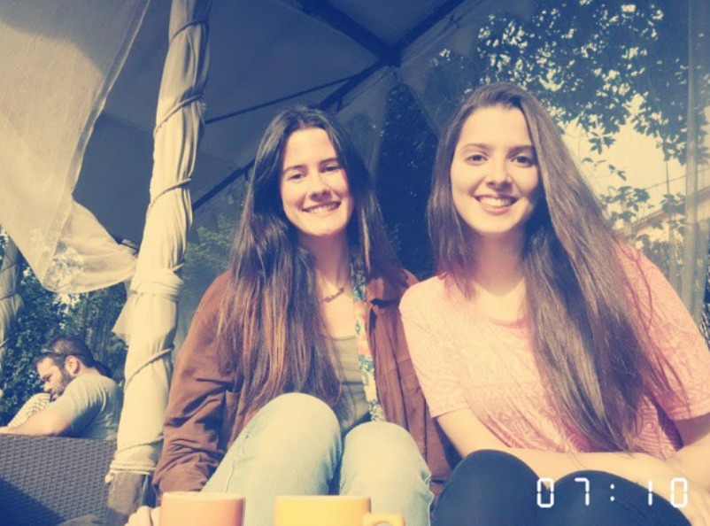
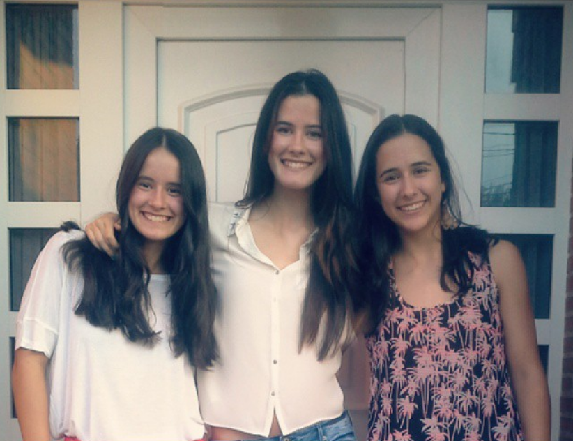
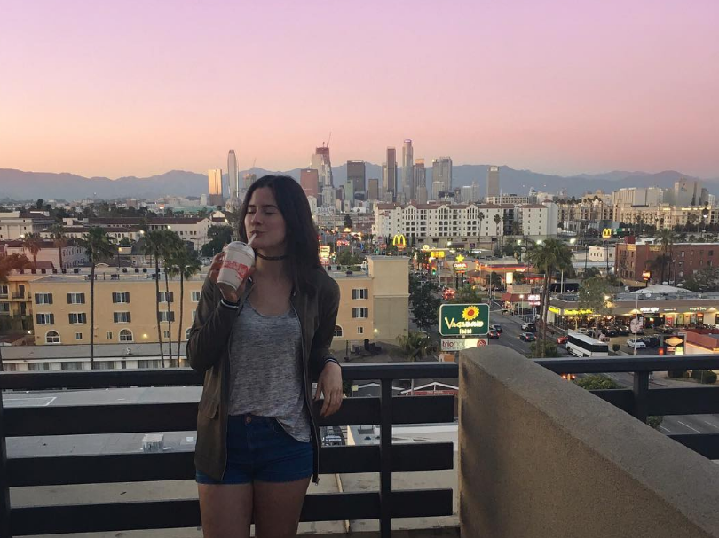
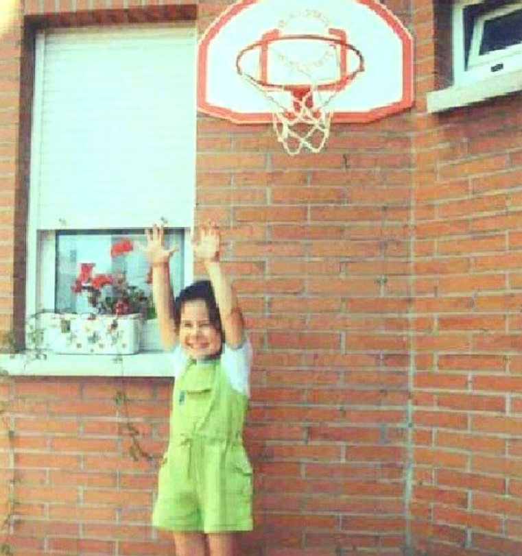
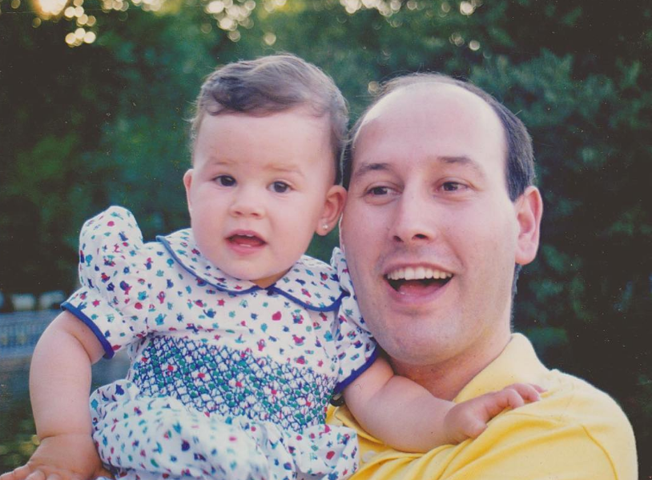
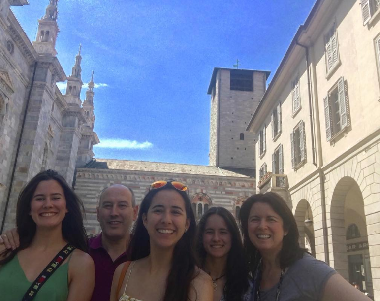
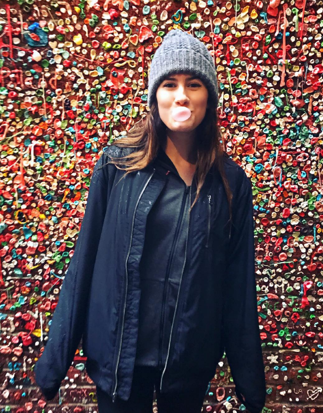
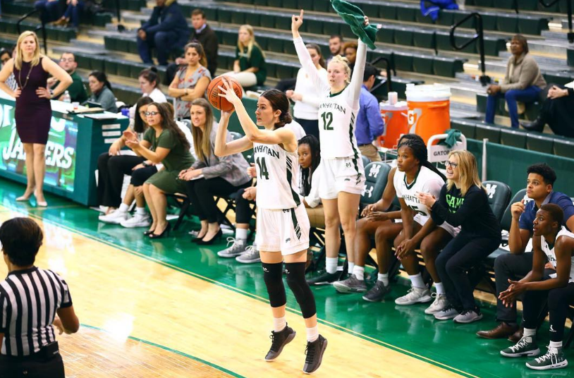
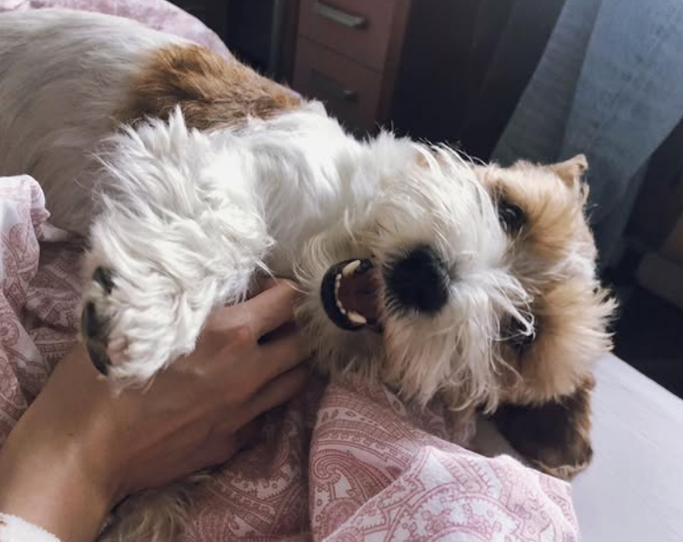
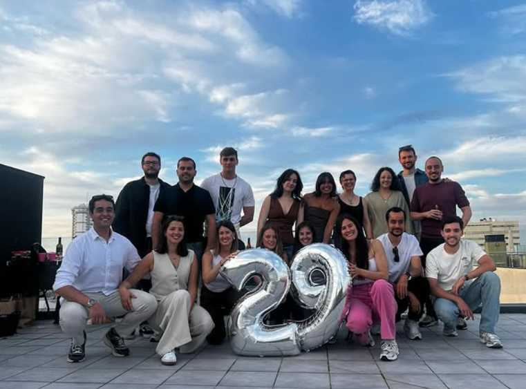

Vertical restante
Antes tiraba de tres. Ahora calcula si hay ascensor.
Gijón, Inditex y duelo nacional
Hoy despedimos una década de rodillas funcionales, noches optimistas y la peligrosa fantasía de que el metabolismo era un KPI estable.
Acta oficial
La veintena no ha sobrevivido al cruce entre analítica avanzada, moda rápida, lesiones antiguas y la acumulación sospechosa de planes de adulto.
Pruebas periciales
Datos inventados, conclusiones irrefutables: la juventud se fue, pero dejó trazabilidad suficiente para culparla en Power BI.
Antes tiraba de tres. Ahora calcula si hay ascensor.
y = dolor_knee + vino_blanco - paciencia
Precisión del modelo: alta. Interpretabilidad: cruel. Feature más importante: cumplir treinta.
Negro impecable, chaqueta gris de Alejandro opcional y mirada de "esto en tienda online quedaba mejor".
Cronologia
Canasta en casa. Altura emocional superior a la reglamentaria.
Baloncesto serio, fotos con balón y cero sospechas de que las rodillas fueran a presentar dimisión.
Ambas rodillas abandonan el proyecto. RR. HH. no consigue retenerlas.
Analista de datos. Gijonesa. Zareta. Dueña de Dobby. Treinta. Casi nada.
Archivo fotográfico
Una selección curada para demostrar que hubo una época en la que el DNI aún no hacía ruido al abrirlo.


















Lectura de cargos
Guardar ropa "por si vuelve a estar de moda" cuando trabaja en Zara y sabe perfectamente que volverá demasiado pronto.
Llamar "plan tranquilo" a cualquier cosa que termine con mirar el tiempo, la ruta y la disponibilidad de sillas.
Convertir una lesión deportiva en lore fundacional de la amistad.
Tener un perro llamado Dobby y aun así actuar como si ella mandara en casa.
Brindis
Por Candela: que siga teniendo datos limpios, amigas con memoria selectiva, vino blanco en copa buena, rodillas negociables y a Dobby convencido de que todo esto se ha organizado para él.